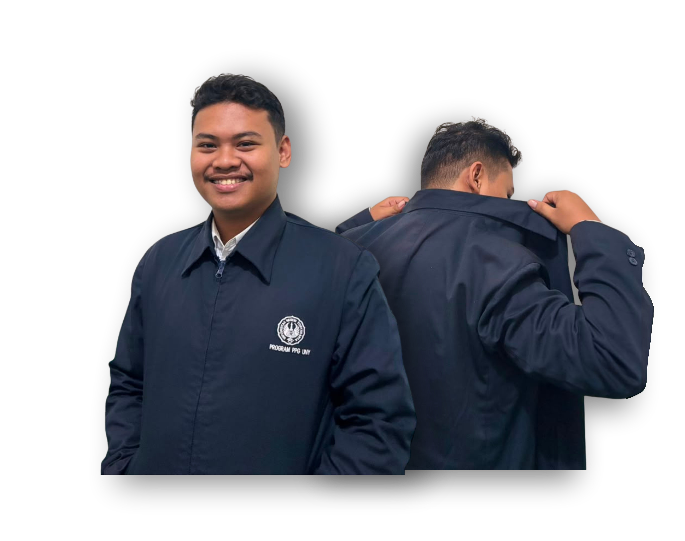

Dokumentasi E-portofolio

Mahasiswa Pendidikan Profesi Guru (PPG) Informatika di Universitas Negeri Yogyakarta. Portofolio ini disusun sebagai dokumentasi perjalanan belajar dan refleksi praktik kependidikan.
[01] Visi & Misi
Mewujudkan pendidikan yang mampu membentuk manusia Indonesia yang berkarakter, berintegritas, serta memiliki kemampuan berpikir kritis berdasarkan nilai-nilai Pancasila.
Melalui pembelajaran yang bermakna, kontekstual, dan membangun budaya belajar sepanjang hayat.
Menjadi guru Informatika yang membangun budaya belajar dan budaya bertanya melalui pembelajaran yang bermakna, kontekstual, dan berpusat pada peserta didik.
Menghadirkan lingkungan belajar yang mendorong peserta didik berani bertanya dan aktif mencari informasi dari berbagai sumber yang valid.
Membangun budaya belajar yang menempatkan peserta didik sebagai pembelajar aktif dan membiasakan pertanyaan di setiap pembelajaran.
Memfasilitasi diskusi, menghubungkan materi dengan kehidupan nyata, serta terus mengembangkan kompetensi melalui refleksi dan kolaborasi.
[03] Penutup
Seluruh proses yang telah dijalani selama masa PPG memberikan pengalaman berharga yang membentuk pemahaman saya tentang menjadi pendidik profesional. Setiap tantangan, kolaborasi, dan refleksi menjadi fondasi dalam membangun kompetensi pedagogik dan kepribadian sebagai calon guru.
Ke depan, saya berharap dapat terus mengembangkan diri sebagai pendidik yang mampu beradaptasi dengan perkembangan teknologi, memahami kebutuhan peserta didik, serta berkontribusi nyata dalam mewujudkan pendidikan Indonesia yang berkualitas dan berkarakter.
Setiap anak membawa isi yang berbeda; tugas guru bukan menggantinya, tetapi mengembangkannya.